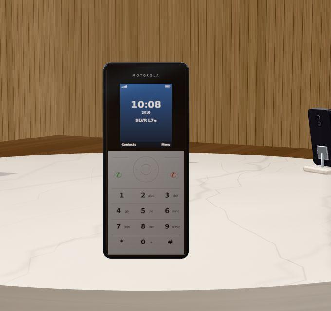
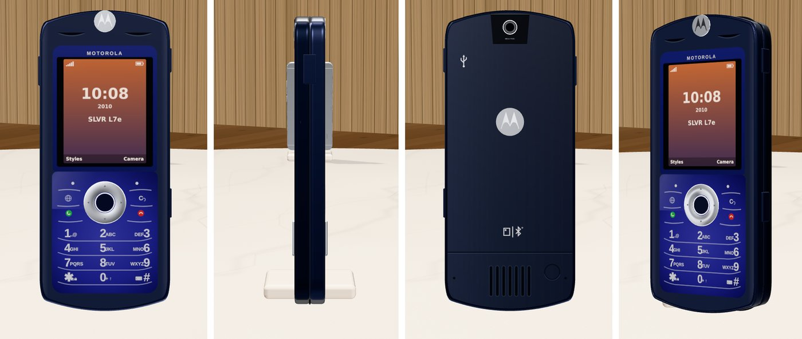
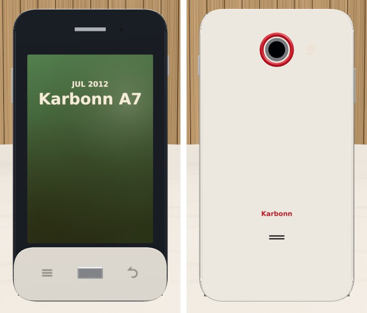
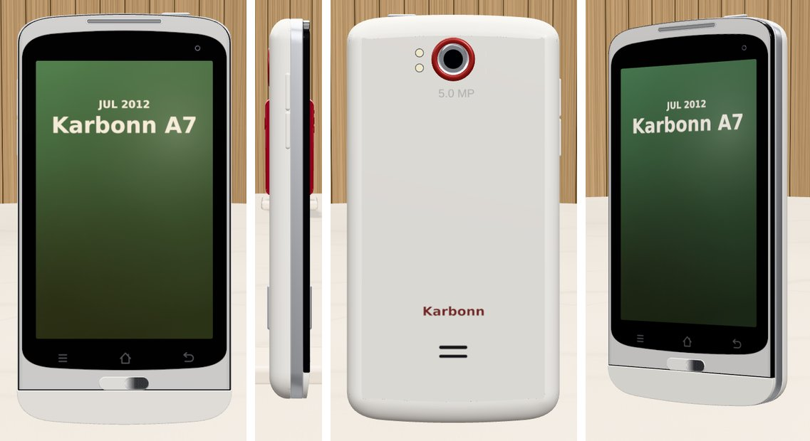

The four company phones got their own bodies and insides, and can be opened.
The site works on a phone: a swipeable phone list, specs in a bottom sheet.
A short how-to note on first load.
Fixes: the battery no longer merges into the cover, every phone matches its listed size, nothing pokes out of the iPhone corners.
The dots on the parts inside are gone.
Pushing AI on realism
The rest of the day was an experiment: how far can AI push these phones towards the real thing, with the models still built in code and no hand modelling?
Motorola SLVR L7e
The first problem was the wrong phone. The SLVR had been built as the silver SLVR L7; the one owned was the L7e, the navy one.
The method:
Take the manufacturer's front and back photos and scale them to the phone's real size, so pixels become millimetres.
Measure every feature on the photo: the outline, the keypad, the logo, the camera, each key.
Place each one in the model at exactly that position. The flat details are painted onto the surfaces; the parts that stick out are built in 3D.
One more round: the real SLVR was sleeker. The size was already right (11.5 mm), but rounded sides, one solid band and parts standing out made it look thick. Flat sides, a fine groove between the two halves, and nearly flush parts fixed that.

Day 1: the wrong SLVR.

Day 2: the navy L7e, traced from its photos. Front, side, back.
Karbonn A7
Then the Karbonn, the same way. The morning version was a guess from a few small pictures; this one used front, back and side photos.
The detail that makes it a Karbonn: the red ring round the camera.

Morning: a guess.

Evening: traced from its photos.
An interesting experiment in how far code alone can push realism. Next step: better tools.
Next
Try Blender for the bodies: same measurements, but real curved surfaces and soft shadows baked in. The Karbonn goes first.
Try free, openly licensed 3D models for the common phones (the iPhones, the Redmi, the Moto E), with credit to their makers.
Trace the rest: Moto E, Redmi Note 3, iPhone 13 mini.
Still pending: the spec sheet redesign, and filling the empty stand.